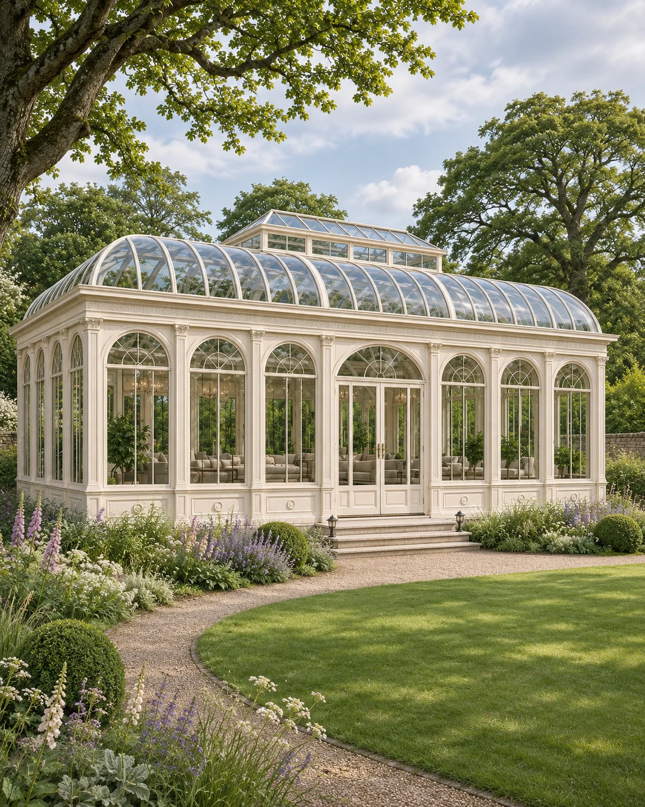

Steel & glass conservatory · Gothic Revival
Gothic Arch Conservatory
The project
Gothic Arch Conservatory
The Gothic Arch Conservatory takes the pointed arch of Victorian Gothic Revival glasshouses and builds a whole elevation from it. Tall lancet-shaped lights run the length of the façade, and a raised glazed entrance gable announces the way in.
Behind the arches, a glazed vault covers the central hall while lower wings with parapet roofs step down on either side. The result reads as a single piece of architecture rather than a room attached to a garden.
- Location
- Samsun, Türkiye
- Completed
- 2023
- Setting
- Restaurant winter garden
- Structure
- Conservatory with glazed vault and side wings
- Frame
- Steel, dark painted finish
- Roof
- Glazed vault over the central hall; parapet roofs to the wings
- Glazing
- Pointed-arch lights with fine glazing bars
- Footprint
- Approx. 11.4 × 4.6 m, about 46 m² (indicative, from our design-record drawing)
- Stage
- Completed structure
- Made by
- Steelwork fabricated and installed by our partner ironwork atelier in Türkiye
Frame, roof and glazing
The frame is steel throughout, finished in a dark paint that lets the arch outlines read clearly against the sky. Steel allows the glazing bars to stay slim while still carrying the height of the arches, so the tracery stays fine rather than heavy.
Each pointed light is divided into smaller panes, and the same divisions continue into the doors and side panels. Ornamental metalwork is concentrated at the entrance gable and the roof edge, where it gives the silhouette its texture.
Gothic Arch Conservatory in motion
Design and build
From drawing to finished structure
We recorded the conservatory as a measured design drawing — front elevation, floor plan and a section through the entrance and vault — to show how the arch rhythm, wing heights and vault relate. The project film follows the finished structure in close-up.
Similar designs

Develop your project
FROM A REFERENCE.
TO YOUR OWN SPACE.
If this direction appeals, see our classical and Gothic conservatories, compare the Arched Glass Garden Salon design, or read how drawings shape a project in our design studio.
Share the setting and the direction you are drawn to, and we will discuss your garden project.
Your next space
LET’S BEGIN
WITH YOUR IDEAS.
Share the setting, the way you want to use the space and the designs you are drawn to.
Plan your project